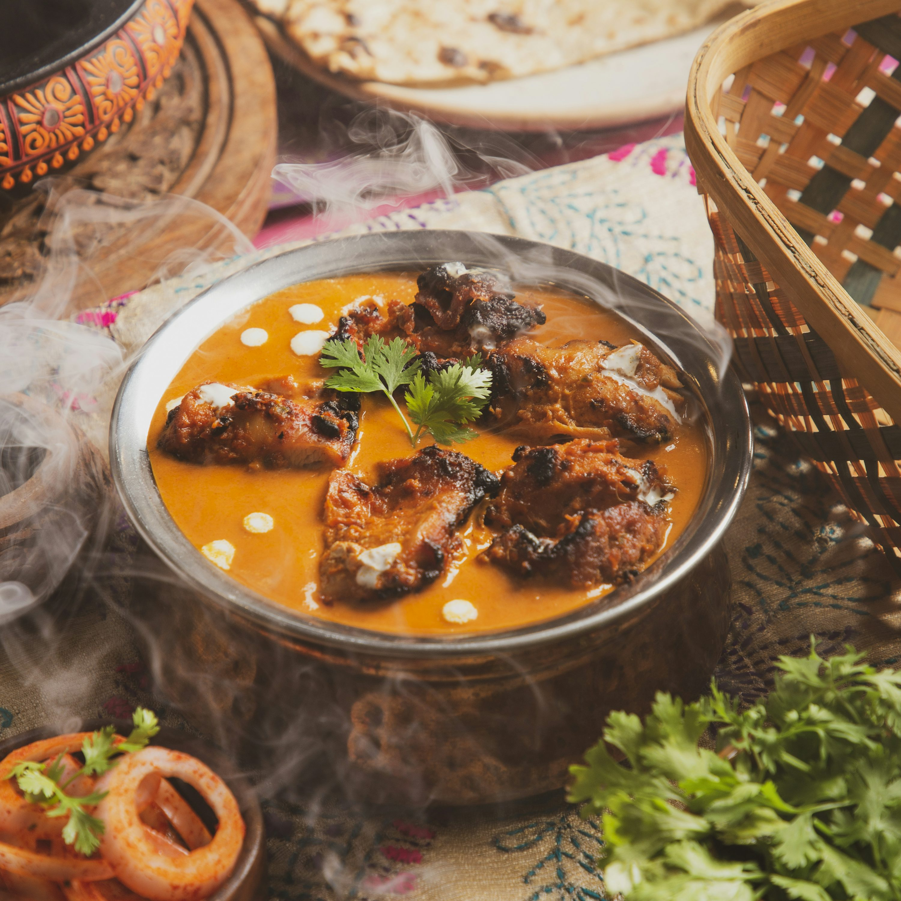

A rich, creamy, and mildly spiced North Indian dish where tender chicken pieces are simmered in a luscious tomato-butter sauce. Perfect with naan or basmati rice.
In a pan, melt 1tbsp of butter. Add chicken and cook until browned.
Stir in tomato puree and spice mix. Simmer for 5-7 minutes.
Add remaining butter and cream. Stir and simmer until thick and creamy.
Garnish with little Extra cream and enjoy with naan bread or rice.